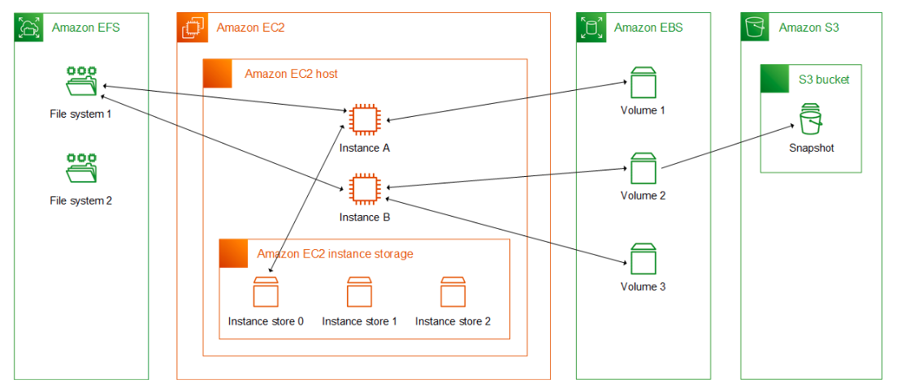

[comment]: # (mdslides presentation.md --include media) [comment]: # (The list of themes is at https://revealjs.com/themes/) [comment]: # (The list of code themes is at https://highlightjs.org/) [comment]: # (markdown: { smartypants: true })  <img src="media/int.png" width="8%"> DevOps Bootcamp - INT College & UPES University # Elastic Cloud Compute (EC2) 
### Today's agenda - Elastic Cloud Compute (EC2) service overview - Elastic Block Storage (EBS) overview - AMIs - EC2 Networking and security
### Elastic Cloud Compute (EC2) overview - Reliable, secure, and almost infinite compute capability - Preconfigured templates for your instances, known as Amazon Machine Images (**AMI**s), that package the bits you need for your server (Linux and Windows) - Various configurations of CPU, memory, storage, and networking capacity for your instances, known as **instance types** - Persistent storage volumes for your data using Amazon Elastic Block Store (Amazon EBS), known as **Amazon EBS** volumes - A firewall that enables you to specify the protocols, ports, and source IP ranges that can reach your instances using **security groups** - Natively integrated with most of the AWS services - Pay-as-you-go [pricing model](https://aws.amazon.com/ec2/pricing/on-demand/)
### Amazon Machine Images (AMI) An [Amazon Machine Image (AMI)](https://docs.aws.amazon.com/AWSEC2/latest/UserGuide/AMIs.html) is a supported and maintained image provided by AWS that provides the information required to launch an instance. - Most common Linux and Windows distro images ready to use - You can launch an instance from an existing AMI, customize the instance (for example, install software on the instance), and then save this updated configuration as a custom AMI. - You can purchase AMIs from a third party, including AMIs that come with service contracts from organizations such as Red Hat.
### Amazon Machine Images (AMI) - AMIs are categorized as either **backed by Amazon EBS** (your instance data is persistent), or **backed by instance store** (your instance data is lost when the instance is **stopped**). - There are four sources of AMIs: - Published by AWS - The AWS Marketplace - Generated from Existing Instances - [Uploaded Virtual Servers](https://docs.aws.amazon.com/vm-import/latest/userguide/vmimport-image-import.html) 
### Instance types When you launch an instance, the [instance type](https://docs.aws.amazon.com/AWSEC2/latest/UserGuide/instance-types.html) that you specify determines the hardware of the host computer used for your instance. - Each instance type offers different compute, memory, and storage capabilities. - Instances are grouped in an instance family based on these capabilities. - Remember that your EC2 shares other resources of the host computer, with other AWS customers. If each instance on a host computer tries to use as much of one of these shared resources as possible, each receives an equal share of that resource. - If the host computer is underused, your instance can consume a **higher** share of that resource while it's available. - Amazon Web Services offers [previous generation](https://docs.aws.amazon.com/AWSEC2/latest/UserGuide/instance-types.html#previous-gen-instances) instance types for users who have optimized their applications around them, as well as then [current generation](https://docs.aws.amazon.com/AWSEC2/latest/UserGuide/instance-types.html#current-gen-instances) types.
### Instance types name Instance types are named based on their family (**c**), generation (**5**), additional capabilities (**n**), and size (**xlarge**). - Possible families are: General purpose, Compute optimized, Memory optimized, Storage optimized, Accelerated computing - The following are the additional capabilities indicated by the instance type names: - a – AMD processors - i – Intel processors - d – Instance store volumes - n – Network optimization - b – Block storage optimization 
### AMI virtualization types The [virtualization type](https://docs.aws.amazon.com/AWSEC2/latest/UserGuide/virtualization_types.html) of your instance is determined by the AMI that you use to launch it. - Current generation instance types support hardware virtual machine (HVM) only. - Some previous generation instance types support paravirtual (PV). - For best performance, AWS recommends that you use an HVM AMI. - The [Nitro System](http://aws.amazon.com/ec2/nitro/) provides bare metal capabilities that eliminate virtualization overhead and support workloads that require full access to host hardware.
### Networking and storage features When you select an instance type, this determines the networking and storage features that are available. - IPv6 is supported on all current generation instance types. - To maximize the networking and bandwidth performance of your instance type, you can do the following: - Launch supported instance types into a cluster [placement group](https://docs.aws.amazon.com/AWSEC2/latest/UserGuide/placement-groups.html). - Enable [enhanced networking](https://docs.aws.amazon.com/AWSEC2/latest/UserGuide/enhanced-networking.html). - To obtain additional, dedicated capacity for Amazon EBS I/O, you can launch some instance types as [EBS–optimized instances](https://docs.aws.amazon.com/AWSEC2/latest/UserGuide/ebs-optimized.html). - The EBS volume persists independently for the life span of the instance. Three types of volumes: - General purpose (SSD) - Provisioned IOPS (PIOPS) - Magnetic
### Instance purchasing options Amazon EC2 provides the following purchasing options to enable you to optimize your costs based on your needs: - **On-Demand Instances** – Pay, by the second, for the instances that you launch. - **Reserved Instances** – Reduce your Amazon EC2 costs by making a commitment to a consistent instance configuration, including instance type and Region, for a term of 1 or 3 years. - **Spot Instances** – Request unused EC2 instances, which can reduce your Amazon EC2 costs significantly. - **Dedicated Hosts** – Pay for a physical host that is fully dedicated to running your instances, and bring your existing per-socket, per-core, or per-VM software licenses to reduce costs. - **Dedicated Instances** – Pay, by the hour, for instances that run on single-tenant hardware.
### Status checks for your instances AWS provide system status checks and instance status checks automatically to all your running instances. - **System status checks** monitor the AWS systems on which your instance runs. These checks detect underlying problems with your instance that require AWS involvement to repair. - The following are examples of problems that can cause system status checks to fail: - Loss of network connectivity - Loss of system power - Software issues on the physical host - **Instance status checks** monitor the software and network configuration of your individual instance. Done by sending an address resolution protocol (ARP) request to the network interface (NIC).
### Status checks for your instances - The following are examples of problems that can cause instance status checks to fail: - Failed system status checks - Incorrect networking or startup configuration - Exhausted memory - Corrupted file system - Incompatible kernel
### EC2 Security - A [key pair](https://docs.aws.amazon.com/AWSEC2/latest/UserGuide/ec2-key-pairs.html) is a set of security credentials that you use to prove your identity when connecting to an instance. AWS stores the public key on your instance, and you store the private key. - A [security group](https://docs.aws.amazon.com/AWSEC2/latest/UserGuide/ec2-security-groups.html) acts as a virtual firewall for your EC2 instances to control incoming and outgoing traffic. - You can specify one or more security groups. If you don't specify a security group, AWS uses the default security group. - New and modified rules are automatically applied to all instances that are associated with the security group. - A security group is **default deny** and **stateful**.
### EC2 Storage Amazon EC2 provides you with flexible and easy-to-use data storage options for your instances. - **Amazon EBS** provides durable, block-level storage volumes that you can attach to a running instance. - **Amazon EC2 instance store** allows access storage from disks that are **physically attached to the host computer**. [Instance store](https://docs.aws.amazon.com/AWSEC2/latest/UserGuide/InstanceStorage.html) provides temporary block-level storage for instances. The data on an instance store volume persists only during the life of the associated instance; if you stop, or terminate an instance, any data on instance store volumes is lost. - **Amazon EFS** provides [scalable file storage](https://docs.aws.amazon.com/AWSEC2/latest/UserGuide/AmazonEFS.html) for use with Amazon EC2. When you launch an instance, the [root device volume](https://docs.aws.amazon.com/AWSEC2/latest/UserGuide/RootDeviceStorage.html) contains the image used to boot the instance (usually it’s an EBS volume). The root volume is mounted automatically.
### EC2 Storage The following figure shows the relationship between the different storage options for your instance: 
# Thanks